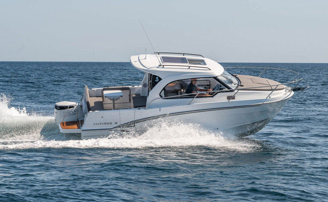

Motorni brod · 9 osoba
Antares 8
Najveći brod u floti, za one koji žele i brzinu i udobnost. Snažni motor od 250 KS, dvije kabine, široki prolaz uz desni bok za siguran prelazak po brodu te dvije krmene platforme za lakše ukrcavanje i kupanje. Na pramcu je prostrano sunčalište, a brod prima do 9 putnika – za obiteljsko krstarenje ili ribolov.
| Dužina | 8,06 m |
|---|---|
| Širina | 2,80 m |
| Kabine | 2 |
| Motor | Honda, 250 KS |
| Spremnik goriva | 340 l |
| Spremnik vode | 100 l |
| Oprema | radio s Bluetoothom, GPS Lowrance, VHF |
- Depozit: 1.000,00 €
dnevno, ovisno o sezoni350,00 € – 550,00 €
tjedno (7 dana)od 2.205,00 €